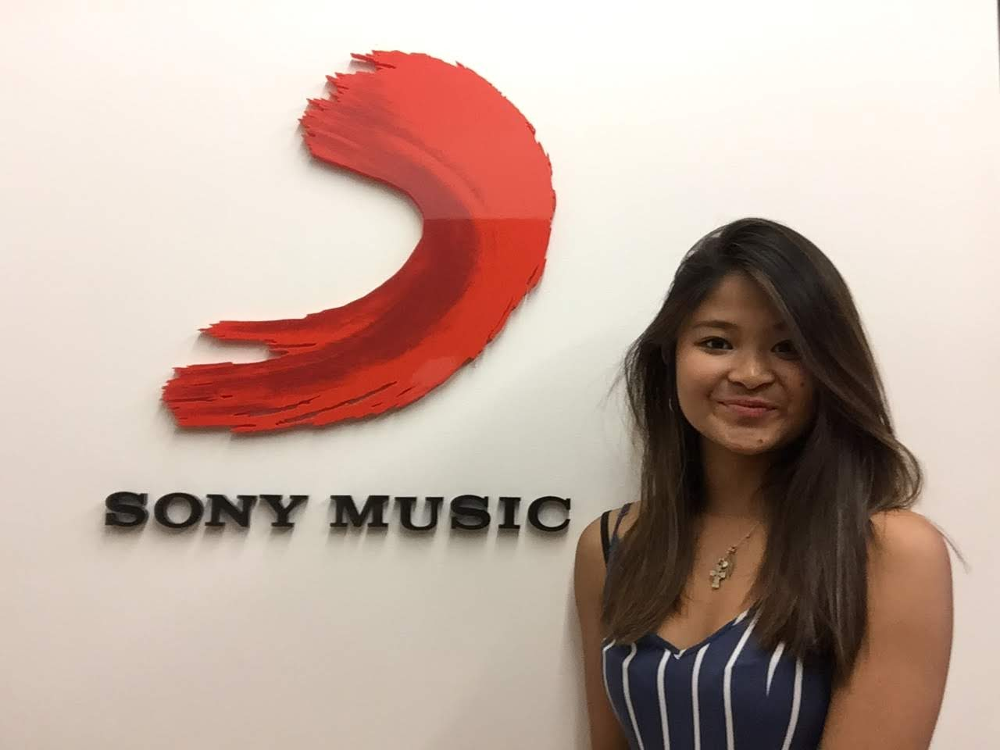

Interning at Sony Music was easily one of the biggest highlights of my summer. As someone who absolutely LOVES music, working at a music company was such a treat. On top of being surrounded by fellow music lovers, I was also at a company that is driven by innovation. They. Never. Stop.
The Internship Process:
The process took a pretty long time. I filled out the application some time in December, but it was until February, when I received an email stating that I had made it to the next round of the application process. During this stage, I had to send in a short 3-minute video, giving a brief overview about myself. After a while, I thought I didn't get the position and continued applying to other internships. However, right before one of my finals, I received a phone call from my future supervisor, asking me if I was still interested in the internship and if I would be able to schedule an phone interview with her sometime in the next week. I enthusiastically told her "YES." A week later, I was interviewed by my supervisor, the VP of Royalties, and another manager. Within an hour after the interview, I found out that I had gotten the internship!

What I Did
Right after my volunteer trip to South Africa, I went to work at SONY. In the beginning of my internship, I was given a full week training on how to navigate through their systems and quickly learned how to code royalties in their royalty proprietary system, EROS, and through SAP. As a royalty operations intern, my main responsibility was to help my supervisor resolve artist inquiries regarding their royalty accounts, which I tracked these inquiries through JIRA. In order to resolve questions I had received from Sony's artists, their managers, or the family members, I had to do extensive research in their recording agreements. I efficiently gathered all the proper documents through SONY's contracts system, CARMA, and details on the artists' individual songs, through Digital Exchange. I learned how to understand legal terminology in their contracts with producers and how their contracts played into what percentage of royalties the artists receive from their total earnings. Afterwards, I created detailed reports for each of the artist inquiries and presented my findings to my supervisors on a daily basis. By the end of my internship, I had resolved over 50 inquiries.
Aside from working in the office, SONY offered many workshops for the interns to participate in to learn more about the music industry. The Engagement Specialist, Kristina Scutari, did such a great job in organizing these intern events. It was truly a great way to learn about other departments.
- What I learned during the marketing workshops:
- Sony implements very subtle, but very effective marketing techniques when they promote their artists
- They have a very talented and creative team that comes up with very unique marketing strateigies
- Their marketing team is really passionate about what they do
- Perhaps one of the coolest people I met at Sony was Ms. Micheline Medina. I met her briefly at a speed networking event. She told me and my group about what she does as a Field Marketing Manager. After listening to her speak, I immediately thought to myself - "Wow, this woman is a powerhouse." Not only does she execute really awesome field markteing strategies, but she also works crazy hard and loves what she does. You could easily see the sincere passion behind what she does at work, which I found truly motivating.
- Right beside the New York office is "Sony Square" where Sony showcases all their technologies that are either already released or are in beta. Here are some of the new technologies I saw at the Square:
- Right through the doors of Sony Square, you can walk into a 360 booming surround system and a huge screen showcasing Sony's artist of a week. It feels as though you are immersed in their music video.
- The more you get to know me, the more you know how obsessed I am with music technology. Sony beta tested one of their products that basically turned classical composers pieces into BUMPIN songs. I wish I had gotten the name of the invention, but it was basically these little white cylinders that each played a clasical song. These cylinders projected symbols of beats (drums, other misc sounds) from the side, and you would be able to touch these projected symbols and add it onto the song! You could also pile these cylinders up onto each other to create an even more intense classical song. Hopefully I'll get to see more of this product later on (and if you know the name of this, please let me know)!
- They also showcased a projectable computer! Instead of having a laptop, you'd just be able to project your screen onto a wall, and Google away!
Overall, I had a pretty great experience for my first internship. I got to be immersed into the day-in-the-life of someone that works in the music-entertainment industry. But Sony Music is not only one big record label, they are also incorporating technology in many of their music initiatives. One example is their "Lost in Music" Tech Campaign (Check it out!) So proud to have worked for this great company and so excited to see what they're going to do next!